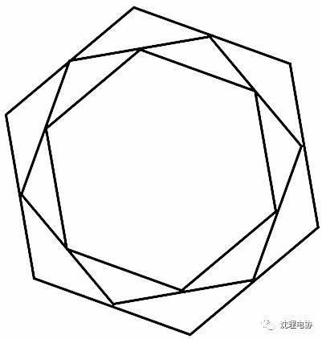
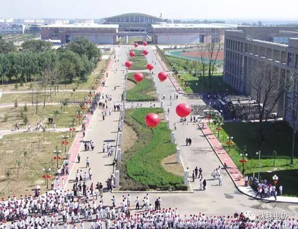
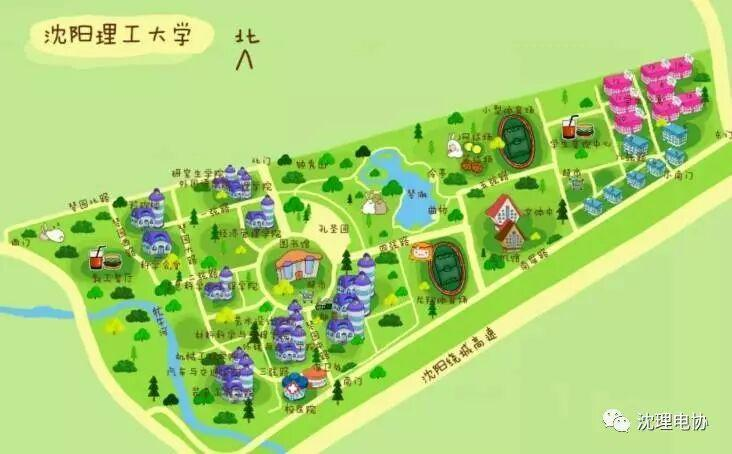
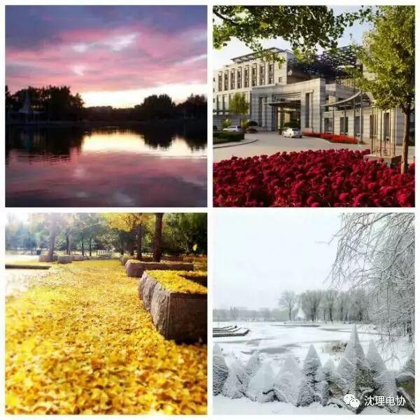
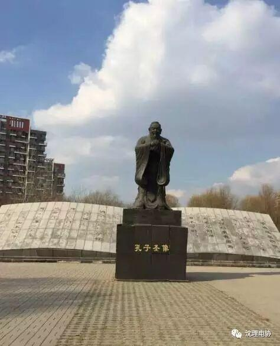
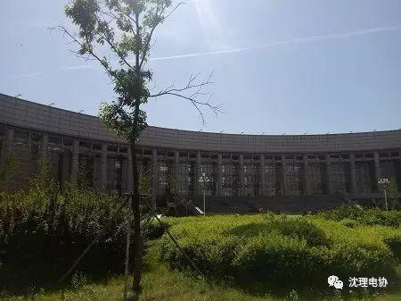

（毕业季）沈理这些年


曾几何时 闻名在耳 已不记得
高三时候便已倾心于你 心心念念的默默憧憬
成了折磨人的复习间歇的唯一乐趣
终于不负众望 终于实现愿望 终于在同学羡慕的眼光中欢呼雀跃的投入你的怀抱
那一年 告别题海 进入你丰富多彩的全新生活
那一年 告别幼稚 开始意气风发的青春

此后
即便是朝朝暮暮都在你的身旁也从无厌倦

春华秋实，青春留下你四季的印记

始于学问，终于人品 学校给予我们的教育有学问 更有品德
学校始终坚持立德树人，以培养高素质应用型人才为目标

男生从此德才兼备 女生从此秀外慧中
春去秋来
转眼又到了毕业季

毕业只是小别 请允许我 以青春之名 继续在此求学

毕业后，只求与你再次相约
亲爱的学长学姐们，你们的理想、激情，你们青春的身影，将永远铭记在我们心中，衷心祝愿电协的学长学姐们前程似锦，让电协因为你们而辉煌！让沈阳理工大学因你们的出色表现而壮大！
编辑：王宁